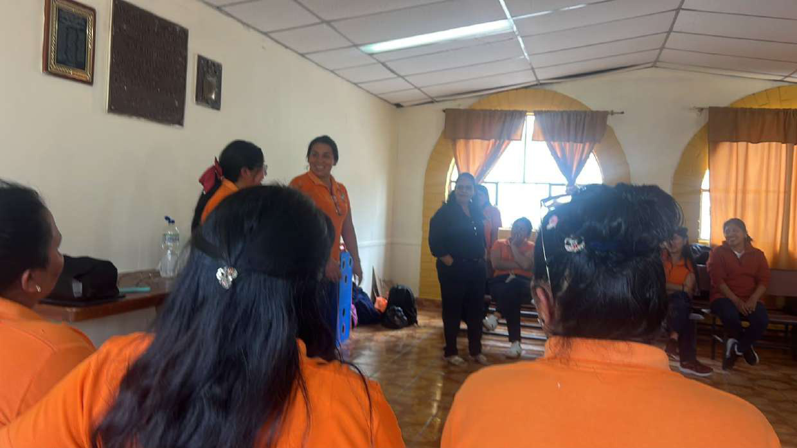
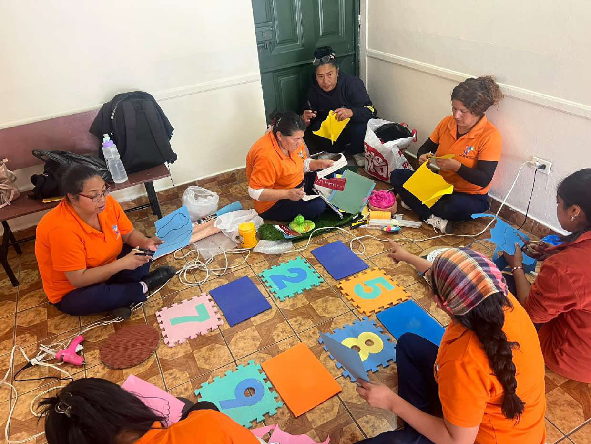
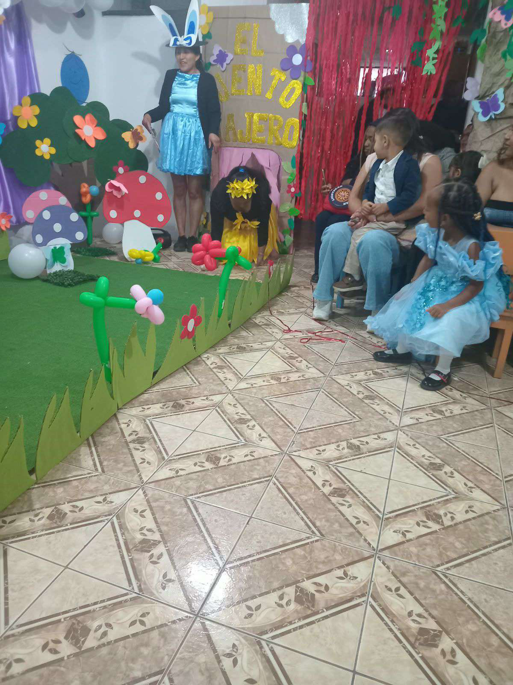
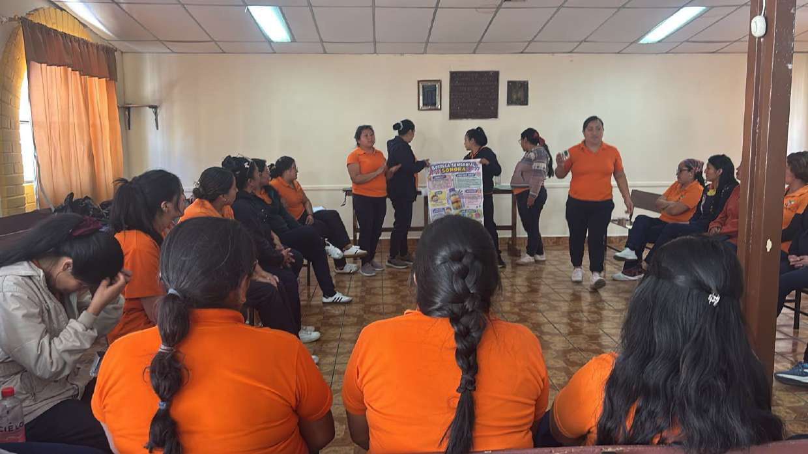
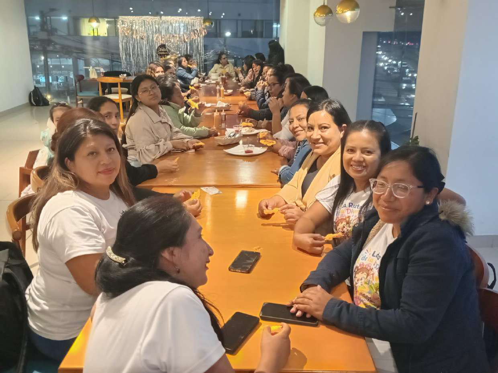
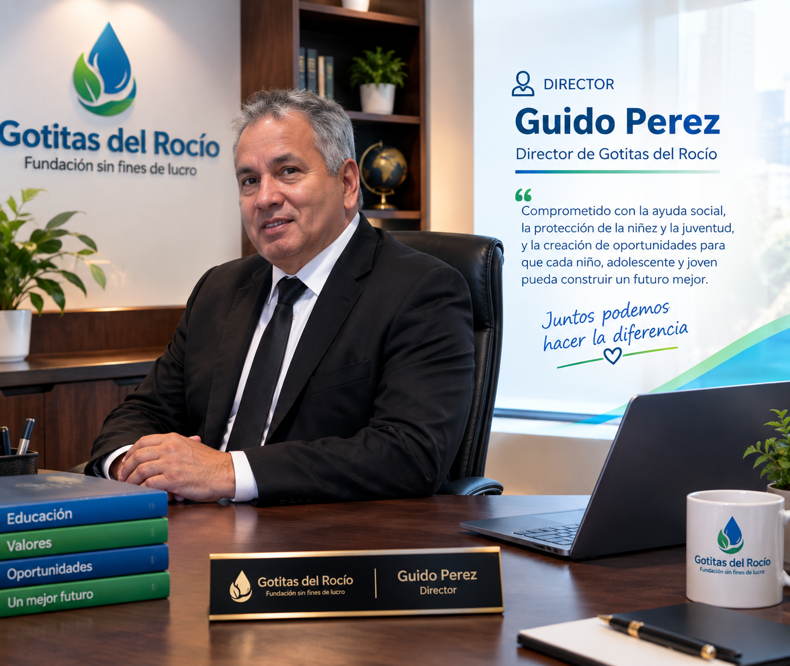

📚
Educación y apoyo escolar
Acciones para fortalecer el aprendizaje, acompañar trayectorias educativas y acercar recursos formativos.
Trabajamos con compromiso y solidaridad para acompañar a niños, adolescentes, jóvenes y familias en situación de vulnerabilidad, promoviendo oportunidades para una vida mejor.

La Fundación Gotitas del Rocío es una organización sin fines de lucro que busca contribuir al bienestar de personas y familias que necesitan apoyo. Creemos en la educación, la solidaridad, la participación y el acompañamiento comunitario como caminos para construir un futuro con más oportunidades.
Nuestra labor se inspira en el respeto a la dignidad humana, la inclusión y el compromiso de trabajar junto a la comunidad.
Conoce nuestras áreas de apoyoPrincipios que orientan nuestro trabajo y la relación con las personas, familias, colaboradores y aliados.
Estas son las líneas de trabajo institucionales que orientan las iniciativas y campañas de la fundación.
Acciones para fortalecer el aprendizaje, acompañar trayectorias educativas y acercar recursos formativos.
Iniciativas solidarias orientadas a apoyar necesidades básicas de personas y familias.
Promoción del bienestar, la escucha, el acompañamiento y la orientación comunitaria.
Espacios de integración, convivencia, participación y hábitos saludables.
Capacitación y desarrollo de conocimientos y habilidades para ampliar oportunidades.
Acciones de apoyo y vinculación comunitaria para familias que atraviesan situaciones difíciles.
La ejecución, cobertura y disponibilidad de cada iniciativa se comunicarán mediante publicaciones institucionales verificadas.
Fotografías propias de las actividades compartidas por la Fundación Gotitas del Rocío.

Unimos capacidades y voluntades para alcanzar objetivos comunes.

Promovemos la identidad, la convivencia y la participación.

Compartimos conocimientos y experiencias para aprender juntos.

Momentos de encuentro que fortalecen los lazos comunitarios.

La dirección de la fundación impulsa el compromiso con la niñez, la juventud y las familias que requieren apoyo. Su labor se orienta a fortalecer el trabajo solidario, promover alianzas y acompañar iniciativas que contribuyan al bienestar de la comunidad.
“Cada gota de solidaridad puede convertirse en un océano de esperanza”.
Una selección de fotografías originales de trabajo en equipo, cultura, capacitación y celebraciones.
Puedes sumarte como voluntario, apoyar una campaña o colaborar con donaciones en especie o económicas. Cada aporte debe coordinarse por los canales oficiales de la fundación.
La fundación busca comunicar sus acciones con responsabilidad y proteger la información de las personas a quienes acompaña.
Publicaremos información y reportes institucionales que hayan sido revisados y autorizados.
Los datos personales y expedientes sociales no se publicarán en la página web.
Las imágenes se publicarán con las autorizaciones correspondientes, especialmente cuando aparezcan menores de edad.
Para colaborar, proponer una alianza o solicitar información, utiliza los canales institucionales cuando estén habilitados.
📍 Ubicación: Ecuador
✉️ Correo: pendiente de confirmar
📱 Teléfono / WhatsApp: pendiente de confirmar
🌐 Redes sociales: enlaces oficiales pendientes de incorporar